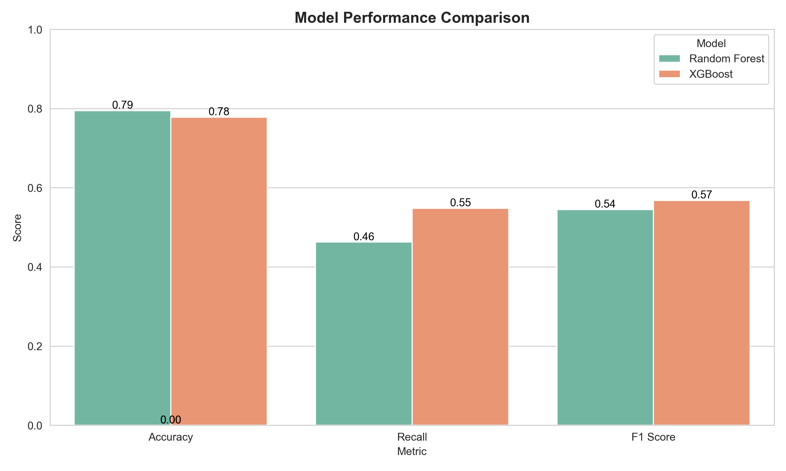
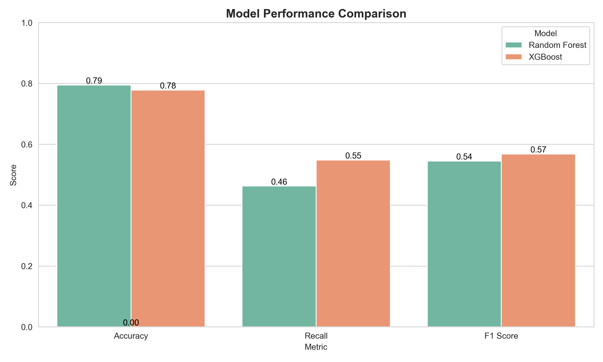

Projects
Diabetes Prediction and EDA
- Conducted EDA on a medical dataset to uncover diabetes-related patterns.
- Built ML models using Random Forest, KNN, XGBoost with accuracy up to 83.5%.
- Compared model performance with confusion matrices and classification reports.
- Created 7 visualizations to understand data distribution and feature relationships.
- Best Accuracy Achieved: 83.5%
- Models: Random Forest, XGBoost, KNN
- Key Features: Glucose, BMI, Age
- No missing values; all features numeric
AI Medical Diagnosis Assistant
- Built a machine learning system to diagnose over 40 diseases based on patient symptoms.
- Cleaned and encoded 4920 rows of medical symptom data, handling missing and duplicate entries.
- Compared three ML models: Decision Tree, KNN, and Random Forest using GridSearchCV.
- Achieved outstanding accuracy, with Random Forest scoring 100% on test data.
- Visualized symptom distribution and model performance with Matplotlib and Seaborn.
- Dataset: 4920 patients – 41 disease classes – 17 symptom fields
- Accuracy: Random Forest – 100% | KNN – 98%
- Best Model: Random Forest (with GridSearchCV tuning)
- Classification Report: Perfect precision, recall, and F1-scores

Customer Churn Prediction and Analysis
- Predicting customer churn is crucial for telecom companies to retain customers and improve strategy.
- This project analyzes customer behavior and builds a machine learning model to predict churn likelihood.
- Source: Telco Customer Churn Dataset (Kaggle)
- Records: 7,043 customers
- Features: 21 columns – demographics, billing, services
- Target: Churn (Yes/No)
- Month-to-month contracts have higher churn
- Low tenure & high monthly charges = higher churn risk
- No tech support or online security increases churn
- Handled missing values in
TotalCharges - Encoded categorical data using
pd.get_dummies() - Scaled numeric features with
StandardScaler - Split data: 80% train / 20% test
| Model | Accuracy | Recall (Churn) | F1 Score |
|---|---|---|---|
| Random Forest | 79.5% | 46.3% | 54.5% |
| XGBoost | 77.8% | 54.8% | 56.8% |


 
